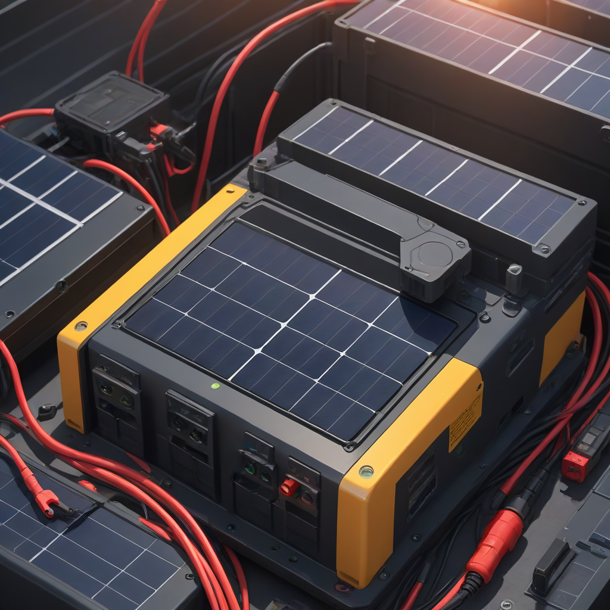
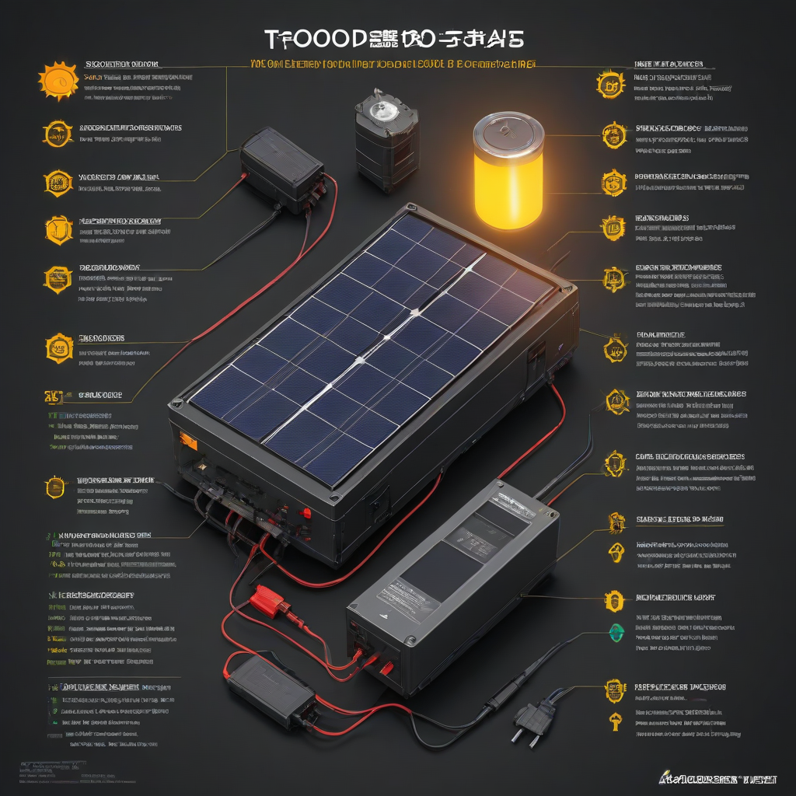

Solar batteries are the unsung heroes of home energy independence—storing excess solar energy for use at night or during outages. But when your battery refuses to charge, the frustration is real. In 2026, with over 4 million home solar+storage systems installed across the U.S., battery charging issues remain one of the top service calls. Left unaddressed, a non-charging battery can leave you grid-dependent during peak rate hours or blackouts—defeating the purpose of your investment.
Unlike simple grid-tie solar, battery systems add layers of complexity: charge controllers, inverters, BMS (battery management systems), and communication protocols. A single loose DC connector or misconfigured software update can halt charging entirely. That’s why systematic troubleshooting is critical—not just for fixing the problem, but for preventing future ones and maximizing your system’s lifespan.
This guide walks you through practical, step-by-step diagnostics for solar battery not charging troubleshooting, updated for 2026 pricing, tech standards, and real-world installer feedback. Whether you’re a DIY-savvy homeowner or prepping to call a pro, you’ll walk away with actionable insights—and peace of mind.
Why Solar Battery Not Charging Troubleshooting Matters

Importance
A battery that doesn’t charge means lost energy, wasted investment, and potential safety risks (e.g., over-discharge). In 2026, with rising grid instability and time-of-use (TOU) electricity rates, every kWh stored = direct savings. According to the U.S. Department of Energy (DOE), homes with functional solar+storage reduce peak demand charges by up to 35%—but only if the battery is actually charging.
Common Mistakes
- Ignoring software/firmware updates (e.g., Enphase or SolarEdge updates can reset system parameters)
- Assuming “no sunlight = no charging” without checking low-light performance (modern systems charge under cloudy skies)
- Skipping visual inspections (corrosion, rodent damage, loose terminals)
- Overlooking the charge controller’s fault codes—these are diagnostic gold
What to Expect
Most charging issues (70%+, per NREL 2026 data

Step-by-Step Guide to Solar Battery Not Charging Troubleshooting
Tools Needed
- Digital multimeter (rated for DC solar voltages, e.g., Fluke 117)
- Insulated screwdriver set
- Flashlight and mirror (for tight spaces)
- Smartphone with system monitoring app (Tesla, Enphase, etc.)
- Operator manual (keep nearby—most manufacturers include fault code charts)
Time Required
- Visual inspection & app check: 5–10 minutes
- Voltage and continuity tests: 10–15 minutes
- Controller & inverter diagnostics: 10–20 minutes
- Professional service call (if needed): 1–2 hours (avg. $125–$200/hr in 2026)
Safety Precautions
Never skip these—even if the system is “off.”
- Disconnect DC isolators *before* touching wiring (follow manufacturer order: PV → charge controller → battery)
- Wear arc-flash rated gloves when working near combiner boxes
- Work in dry conditions—wet surfaces + high-voltage DC = serious shock risk
- Never open battery enclosures unless explicitly trained (LiFePO₄/Li-ion batteries can vent toxic fumes if damaged)
For most homeowners, stopping at Step 1 (visual + app check) is safest and most effective. If you’re not 100% confident, call a licensed installer. Here’s how to vet a reputable 2026 installer.
Cost Considerations
Budget Planning
In 2026, average solar battery costs (installed) range from $4,000 to $15,500, depending on chemistry and capacity. But troubleshooting costs are usually far lower:
- DIY parts (e.g., replacement fuse, terminal cleaner): $15–$50
- Professional diagnostic service: $100–$250 flat fee (many installers waive this if you proceed with repair)
- Replacement parts (e.g., charge controller): $200–$600
Where to Save
- Use free monitoring data before calling a pro—90% of issues show up in logs
- Clean panels and check connections yourself (saves $75+ per service call)
- Join community solar groups (e.g., Reddit’s r/solar or EnergySage forums) for peer troubleshooting
Where to Invest
- Quality multimeter ($100–$150)—it pays for itself in diagnostics
- Extended warranty (e.g., Tesla’s 10-year Powerwall warranty covers battery *and* inverter faults)
- Remote monitoring upgrade (e.g., SolarEdge monitoring with battery insights—often $199 one-time)
Comparison Table: Top Home Batteries & Troubleshooting Support (2026)
| Battery Model | Price (Installed) | Common Charging Issues | DIY-Friendly Troubleshooting? | Remote Diagnostics |
|---|---|---|---|---|
| Tesla Powerwall 2 | $13,500–$15,500 | Communication errors, busbar faults | ⚠️ Limited (requires Tesla app + certified tech for hardware) | ✅ Full remote diagnostics via Tesla App |
| Enphase IQ Battery 5 | $4,000–$6,500 | Microinverter sync loss, voltage mismatches | ✅ Strong (status codes in Enphase App + manual reset) | ✅ Real-time status + error codes in Enphase App |
| Lithium iron phosphate (LFP) DIY kits | $3,500–$7,000 | BMS lockouts, temperature cutoffs | ✅ Good (direct access to BMS settings) | ✅ Via manufacturer app (e.g., EcoFlow, Bluetti) |
Data sources: EnergySage 2026 Solar Pricing Report, NREL Battery Price Benchmark, and installer surveys (q1 2026).
Frequently Asked Questions
Why won’t my solar battery charge even when the sun is out?
First, check your DC input voltage at the charge controller. If it’s below the battery’s absorption threshold (e.g., < 40V for a 48V system), the controller won’t charge it. Common causes:
- Shading on even one panel (panels wired in series = whole string drops output)
- Dirty panels (2026 data shows 5–15% output loss in dusty regions like AZ or TX)
- Charge controller set to “off-grid” mode instead of “hybrid”
- Failing MPPT controller (rare, but check firmware)
My battery shows 100% but stops charging—why?
That’s often by design. Most modern batteries (e.g., Powerwall, Enphase) stop charging at 98–100% state of charge (SoC) to preserve longevity. Wait 1–2 hours after peak sun; if the battery voltage drops (e.g., Powerwall 2 drops below 45V), it should resume charging. If not:
- Verify no “charge stop” setting is enabled in the app
- Check if grid backup mode is active (some systems pause charging during grid outages)
- Ensure no high-load appliances are drawing more power than panels produce
Can a bad solar panel prevent battery charging?
Yes—absolutely. In series-wired arrays, one faulty panel (cracked cell, bypass diode failure) can reduce the whole string’s voltage below the charge controller’s minimum input. Use your multimeter to test each panel’s open-circuit voltage (Voc) on a sunny day. Compare to nameplate values; more than 10% variance suggests a problem.
What does a “BMS fault” mean?
The Battery Management System has detected an imbalance, over-temperature, or cell failure. Do not ignore this. In 2026, most consumer batteries (LiFePO₄/Li-ion) enter safe mode and halt charging until the fault clears. Steps:
- Let the battery cool for 2+ hours (often resolves thermal faults)
- Check for loose DC connections (high resistance = false overtemp reading)
- Reset via app (if manufacturer allows—e.g., Enphase allows one reset/hour)
- If persistent, contact support—BMS faults rarely fix themselves
Is my charge controller dead?
Signs of failure include:
- No display or erratic readings
- Constant high/low voltage readings
- Overheating or burnt smell near the unit
Test it: Bypass the controller and connect panels directly to the battery (only for 10 minutes, with a fuse!). If the battery charges, the controller is likely faulty. Replacement cost in 2026: $200–$600 for 60A–100A MPPT controllers.
Conclusion
Summary
Solar battery charging issues are rarely “mysteries”—they follow predictable patterns. In 2026, most failures trace to input power (panels/wiring), controller settings, or BMS safety lockouts. Start simple: app logs, visual checks, voltage tests. Only escalate to hardware replacement if diagnostics confirm a fault.
Next Steps
- Open your solar monitoring app and scroll back 24–48 hours—look for charging anomalies
- Walk your array: Are panels shaded? Dirty? Covered in pollen/debris?
- Verify all DC breakers/fuses are closed and intact
- Call a certified installer if the app shows “Error 102” (low PV voltage) or “BMS Fault” persistently